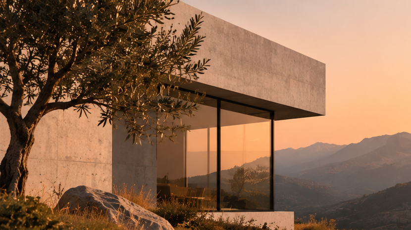
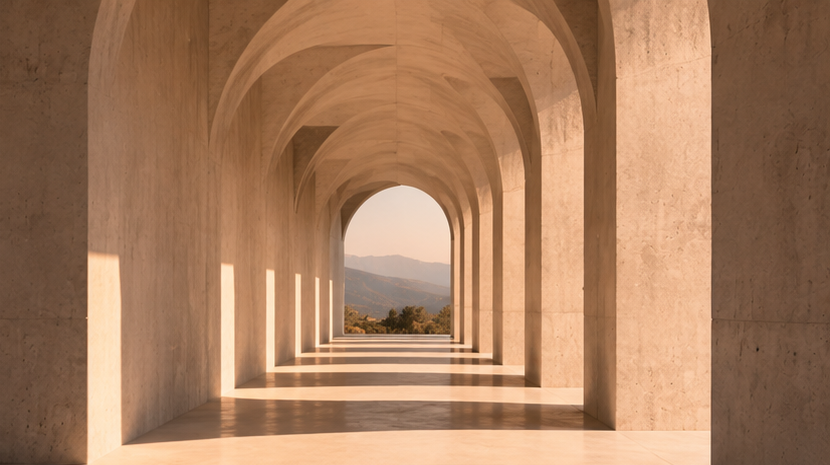
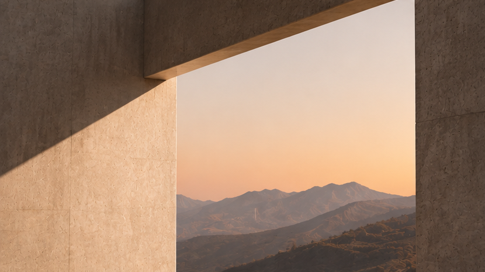
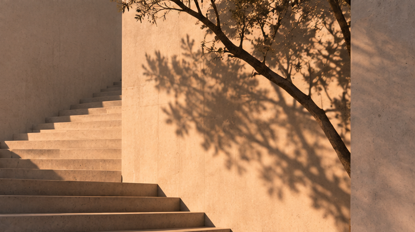
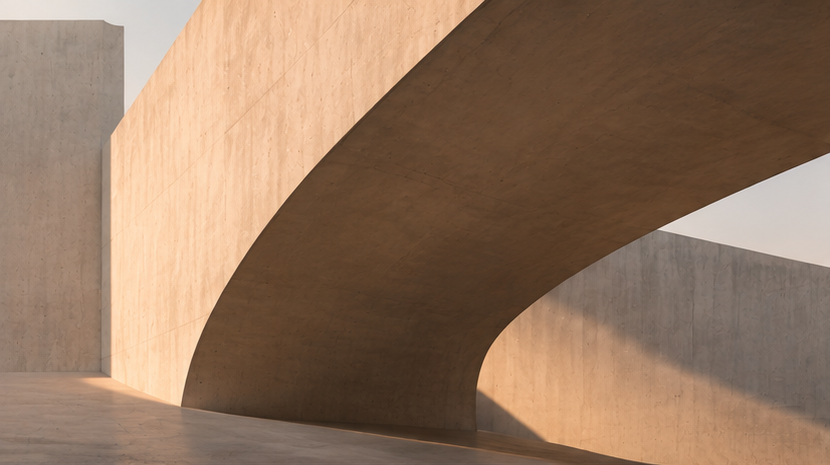
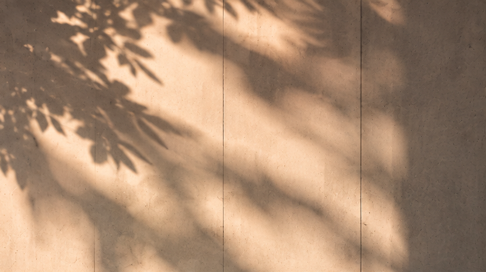

Monolith Archive
An immersive spatial web platform celebrating brutalist architectural forms through interactive WebGL camera sequences and soundscapes.
Designing digital experiences at the intersection of architecture, technology, and human behavior.
A collection of digital experiences shaped through design, technology, and architectural experimentation.

An immersive spatial web platform celebrating brutalist architectural forms through interactive WebGL camera sequences and soundscapes.
Interactive acoustic exhibition mapping directional audio reflections across concrete gallery walls.

Generative light simulation tracking solar azimuth coordinates to cast real-time shadows on editorial typography.

Editorial digital expedition monograph featuring high-resolution terrain photogrammetry and interactive contours.
Engineering bespoke interactive web environments, custom shaders, and bespoke motion choreographies.
→Sculpting deliberate UI systems, tactile design tokens, and editorial layout architectures.
→Architecting robust, accessible, high-performance web platforms with zero unnecessary dependencies.
→Creating 3D spatial product presentations, micro-interactions, and experiential brand launches.
→Defining photographic palettes, typographic hierarchies, and cohesive digital design philosophies.
→Prototyping experimental interactions, generative visuals, and spatial audio installations.
→Researching the fundamental problem, technical context, and intended audience to define the core architectural brief.
Establishing typographic hierarchy, geometric spatial grids, and motion grammar before writing code.
Translating conceptual models into responsive, performant digital code with relentless attention to tactile detail.
Testing across viewport scales, optimizing frame rates, fine-tuning transitions, and eliminating friction.
Ongoing digital sketches, spatial studies, and geometric lighting explorations.



Have a project, collaboration, or interesting idea? Let's create something meaningful.